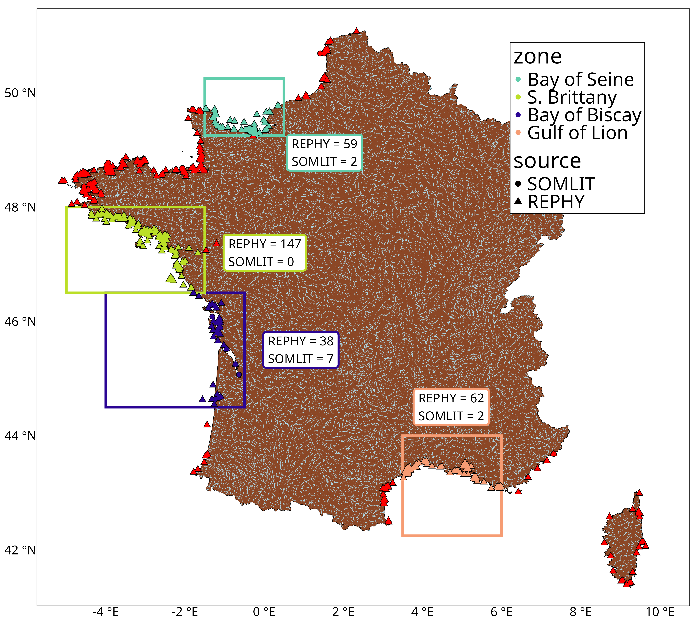
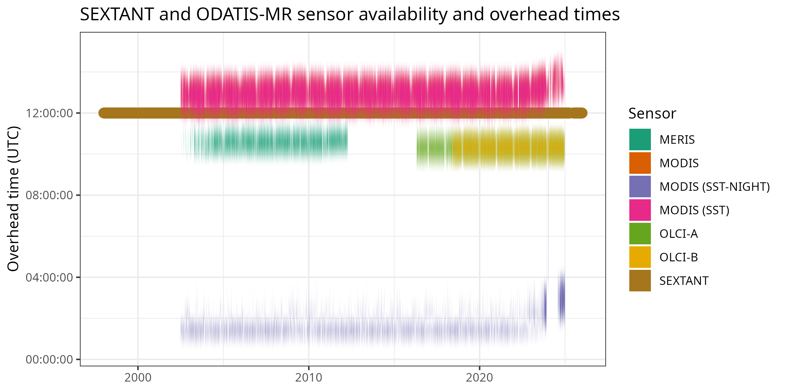

Satellite Validation Results
Interactive summary of sensor, correction, and processing comparisons for in situ measured variables from differenet sourcees, seasons, and sites for four French RiOMar
This report explains the validation results of a comparison of SEXTANT and ODATIS-MR expert products against in situ data measured by the REPHY and SOMLIT networks. Each row compares a satellite product against in situ observations for a specific sensor, correction, processing chain, zone, source, site, season, measured in situ variable, and the corresponding satellite variable.
The data validated in this study were constrained to four of the French RiOMar, as seen below.

The data from these stations were filtered to the dates and times when overhead satellite passes were available. For daytime values the time window was 10:00 to 14:00, and for nighttime values (SST only) this window was 00:00 to 09:00. Note that while 09:00 is a bit late into the morning, there were very few early morning measurements available for comparison otherwise.
The satellites used here have two different resolutoins. SEXTANT is ~1 km, while ODATIS-MR is ~ 300 m. Therefore, for the SEXTANT data a 3x3 grid of pixels was extracted around each station, and for ODATIS-MR this was 7x7. In this way roughly a 1 km ring was extracted around each in situ station for each matchup. Finally, the coefficient of variation (CV; standard deviation/ mean; %) was computed across all extracted pixels and any days with a CV >20% were discarded. The resulting paired satellite and in situ observations were then compared using a variety of metrics, which are presented in the tables below.

The broadest rows are presented first: GLOBAL zone, ALL source, ALL site, and ALL season. The document then moves into larger seasonal tables and finishes with the full site-level results.
The row counts at a glance:
The rows below are colour coded by the in situ variables used for the comparisons:
CHLA SPM TEMP TUR
These are chlorophyll, suspended particulate matter, temperature, and turbidity, respectively.
How to Read the Tables
Use the filters above each table to narrow by sensor, correction, processing, zone, source, site, season, or variable. Click column headers to sort. The CSV button downloads the currently filtered rows for that table. Rows are colored by the variable column so chlorophyll, suspended particulate matter, temperature, and turbidity comparisons remain easy to distinguish while scanning.
| Metric | Interpretation |
|---|---|
n |
Number of paired satellite and in situ observations. |
Bias |
Mean signed difference. Positive or negative values show systematic over- or under-estimation. |
Error |
Mean unsigned percentage error. |
Slope |
Linear slope between satellite and in situ values. Values near 1 indicate proportional agreement. |
Slope_log |
Slope after log transformation of the data. Ideal for non-temperature data. |
Scatterplots
Scatterplots for the GLOBAL results are also available for every matchup shown in the first table below. These may be accessed via the GitHub interface directly within this folder.
GLOBAL and ALL Results
These tabs start with the broadest possible summary rows and then open into the next-most-general summaries by source and by zone.
GLOBAL zone, ALL source, ALL site, and ALL season. This is the best first stop for comparing sensors and processing choices at the most general level.
GLOBAL zone with ALL site and ALL season, retaining source-specific rows. Use this to see whether the broad results differ between the full source pool and individual in situ networks.
ALL source, ALL site, and ALL season, retaining zone-specific rows. Use this to compare broad regional behavior before moving into seasons and sites.
GLOBAL/ALL by Variable
The same broad GLOBAL and ALL rows are split by variable here. This is useful to look at only one type of water-colour or temperature product.
Seasonal Results
The seasonal tables keep site == "ALL" and show season-specific rows. They are larger than the global overview because they retain the seasonal split while still avoiding individual-site detail.
Seasonal Results by Variable
This section keeps the seasonal rows but separates them by variable, which makes it easier to compare seasonal behavior within one measurement type.
Site-Level Results
This final section contains the most detailed rows, where site is not ALL. These tables are intentionally large and are best explored with the column filters.